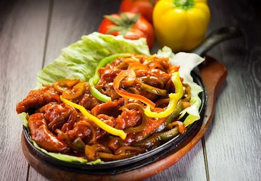

Sizzler

In the late 1970s and early 1980s, Sizzler promoted steak and combination steak dinners with an optional salad bar. The restaurant wanted to give customers the feel of a full-service restaurant at a price slightly more than a fast food chain. To control costs, many restaurants had in-house meat cutters that would cut steaks and grind beef.
Into the early to mid 1980s, competition appeared: Ponderosa Steakhouse and Bonanza Steakhouse. After promotions, such as all-you-can-eat fried shrimp, the chain expanded its salad bar into a full buffet promoted as the "Buffet Court." Patrons began to use the buffet as a meal instead of an add-on to an entree. In response, Sizzler lowered the quality in other menu areas.[4] Sizzler also introduced a free grilled cheese bread roll at the start of the experience which was intended to line the stomach, curbing appetite. Customers took notice, and Sizzler's reputation suffere
d
Sizzler filed for Chapter 11 bankruptcy in 1996 ("to escape costly leases on unprofitable restaurants"),
and closed over 130 of its locations.[5][6][7] The company reemerged from Chapter 11 in 1997.
During the late 1990s, new management upgraded the quality of food and increased prices.
Twenty one locations closed in 2001. Sizzler began an image makeover circa 2002. A new restaurant
concept was created.